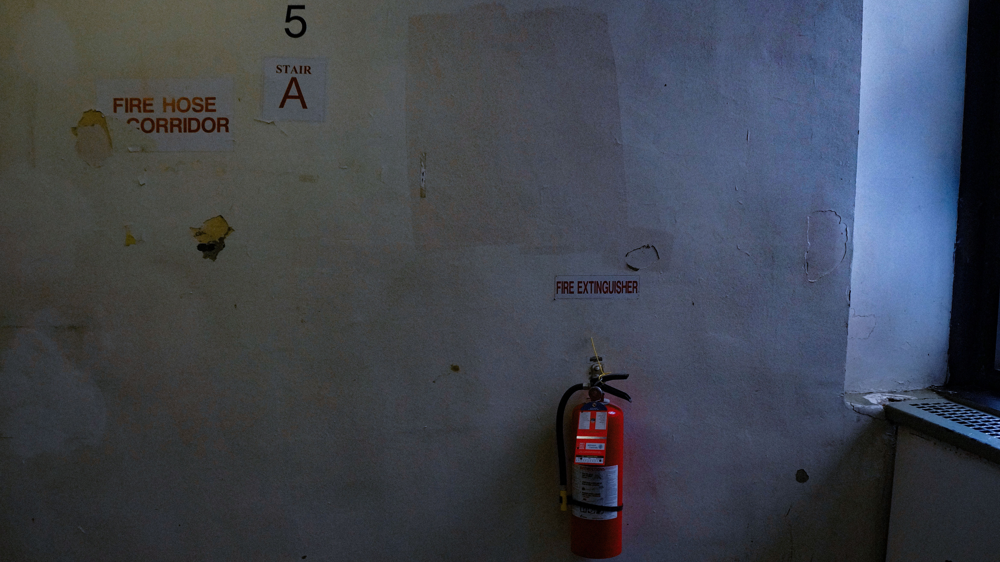
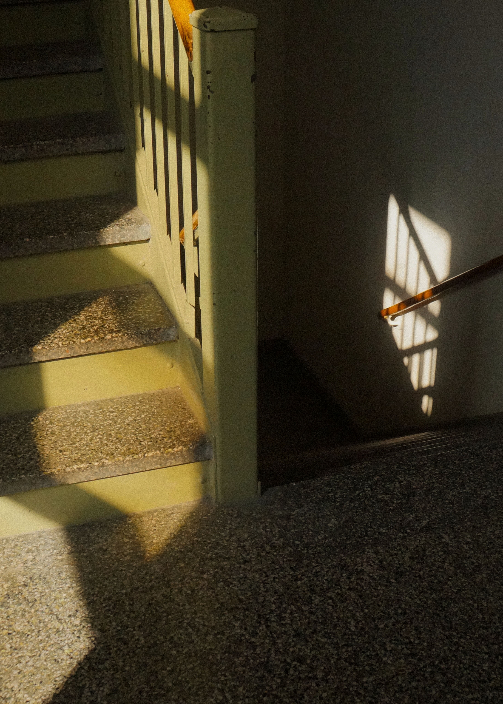

Before taking this photo, I was walking up and down the stairs in the North building, trying to figure out what to shoot. I was particularly drawn to this wall because of the three pops of red, such as the fire extinguisher itself, the “Fire Extinguisher” sign, and the number 5. While editing, I began to notice the wall’s imperfections and decided to emphasize the even more. I also wanted to make the staircase feel darker, older, and a bit unsettling. To achieve this, I lowered the clarity and exposure of the image, adjusted the gradient, and increased the dehaze significantly to bring out the patches and the overall texture of the wall, making its imperfections stand out more.


I specifically chose this image because I was drawn to the green color of the staircase and the way the sun was shining on it. When editing the photo, I wanted to give it the feel of an old image. I lowered the exposure and brightness slightly to highlight the sunlight coming through the window, but not too much that the staircase lost its details. Then, I added some grain to create more of a film-like feel. As well as, messing with the hue and saturation to add more of an orange filter that makes the image look like it was taken during golden hour. My vision for this edit was to make the image feel more cinematic, maybe like a still taken from a coming-of-age film.